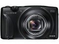
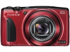
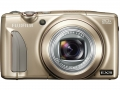
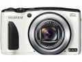
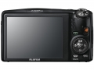
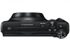
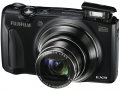

器材库 > 不可换镜头数码相机 > FinePix F1000EXR

规格总览
发布日期
2014-01-23
厂家推荐价格
30,000.00 （日元）
防水
否
影像规格
影像传感器
EXR CMOS
影像传感器尺寸
1/2.0英寸
总像素
1863万
有效像素
1600万
静态图像尺寸
L：（4:3）4608×3456 /（3:2）4608x3072 /（16:9）4608×2592 /（1:1）3456×3456
静态图像格式
JPEG
画幅比
4:3, 16:9, 1:1
短片尺寸
1920X1080 60p / 1280×720 60p/ 640×480 30p
短片格式
MOV
短片音效
线性PCM /立体声音响
防抖系统
多重图像稳定（CCD 位移+高感光度）
镜头和对焦
镜头结构
14片/11组
非球面镜片
3片
焦距
4.6mm-92mm
等效35mm画幅焦距
25mm-500mm
最大光圈
f/3.5-5.3
光学变焦
20倍
数码变焦
2倍
最近对焦距离
广角45cm，长焦250cm, 微距5cm
自动对焦系统
TTL自动对焦
对焦模式
单幅自动对焦/连续自动对焦
曝光控制
测光模式
中央重点测光, 多分区评价测光, 点测光
曝光模式
P（程序自动曝光）, A（光圈优先自动曝光）, S（快门速度优先自动曝光）, M（手动测光曝光）
场景模式
肖像，美肌，风景，运动，夜景，夜景（三角架），烟火，日落，雪景，海滩，聚会，花卉特写，文字，宠物识别（狗），宠物识别（猫）
快门速度
8 ～ 1/2000
曝光补偿
±2EV以1/3EV级调整
ISO感光度
100, 200, 400, 800, 1600, 3200, 自动, 可扩展至3200, 可扩展至6400, 可扩展至12800
白平衡
白炽灯, 阴天, 自定义, 自动, 预设白平衡, 晴天, 水下, 荧光灯（冷白色）, 荧光灯（日光）, 荧光灯（暖白色）
自拍
10秒, 2秒
连拍
11fps/秒(全画幅下最高5张)
拍摄模式
EXR优先，自动，触摸&拍摄，场景定位，自然光，自然光&闪光，手动，动画
闪光灯
内置闪光灯
固定
闪光模式
A-TTL, 慢速同步, 强制闪光, 禁止闪光
闪光涵盖范围
广角: 约5cm - 3.0m /望远: 约 1.2m - 3.0
取景规格
LCD类型
彩色TFT LCD
LCD尺寸
3.0英寸
LCD像素
92万
视野率
100%
文件输入/输出
内置存储容量
21MB
存储卡
SD/SDHC, SDXC
数据接口
USB2.0
视频/音频接口
AV 输出
无线功能
Wi-Fi
电源
电池
锂离子电池NP-50
外观
颜色
黑色, 红色, 香槟色, 蓝色
尺寸
105.1 x 63.3 x 36.0mm
重量
212g
其它
GPS
无
该产品暂无存档的网友点评
产品图 / 样片





